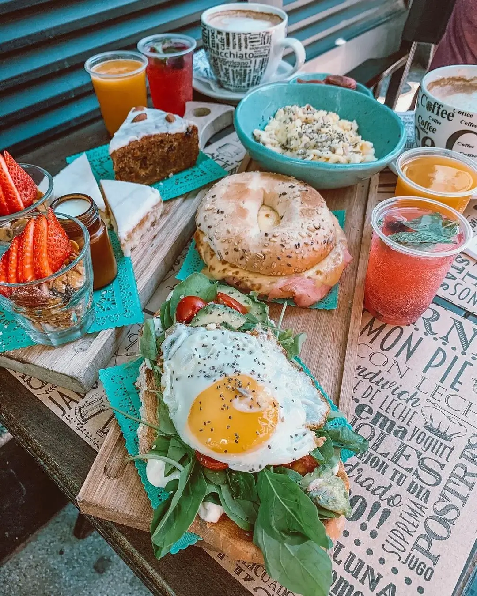

BARES CON LA MEJOR TEMÁTICA

Adela Vintage
team leader
. Carta amplia con 2 opciones de brunch, alternativas de desayunos,
almuerzos, picoteo y demás.
. Café en tazón con opción de leche de almendra (+ $80).
. Destaco la reversión del avocadotoast, llenadora, con bastante palta y huevo a
la chapa, el bagel es grande y con buen relleno. De lo dulce, la granola con
miel es lo mejor y el limoncito glaseado estaba delicioso.


Spring Vegetariano
team leader
. Todo su menú es vegetariano con un montón de opciones veganas también. El menú
tiene 2 partes, platos occidentales (hamburguesas, risottos y pastas) y platos
orientales como tempura, rollos primavera, baos, curry (picante) y fideos de
arroz con verduras.
. Local muy lindo y espacioso.

T&B Sushi Bar
team leader
. Ambientación asiática con varias mesitas afuera y dentro bien espaciadas.
. De cortesía te sirven unas bolitas fritas de arroz rellenas queso
philadelpia
. Tienen un montón de variedad de piezas de sushi y me gustó que las piezas son
grandes y vinieron bien presentadas. Mis favoritas fueron las vegetarianas con
mango y a mi acompañante le encantaron las de salmón.